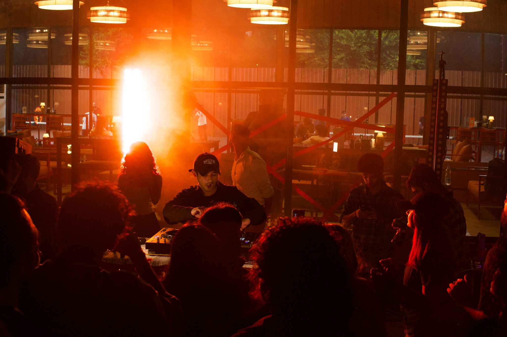
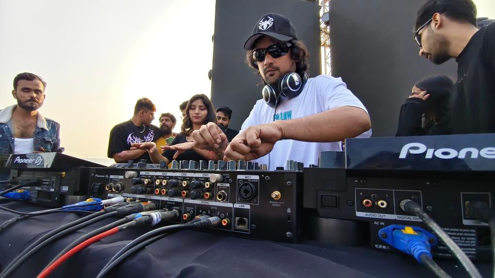
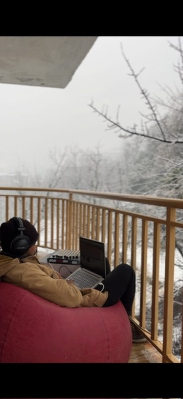
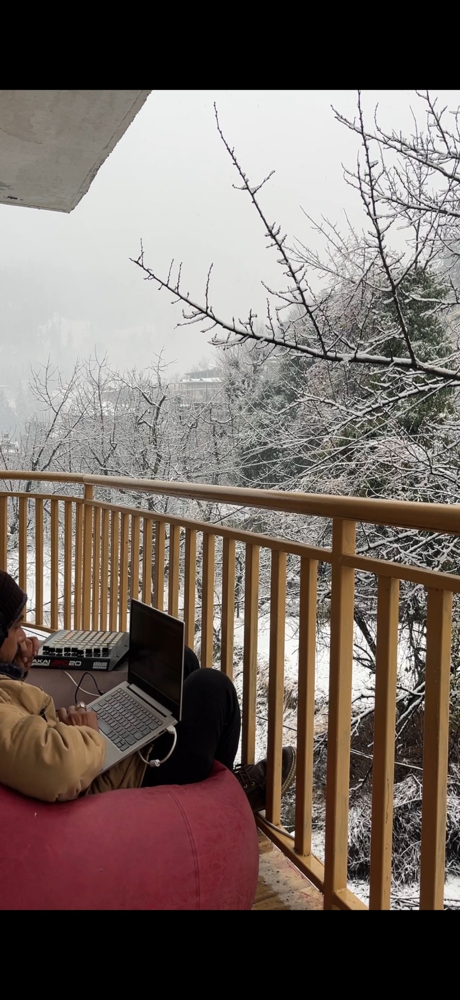
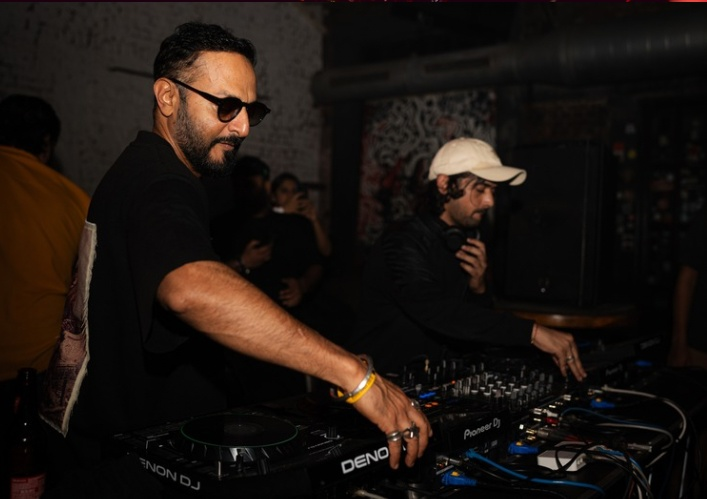
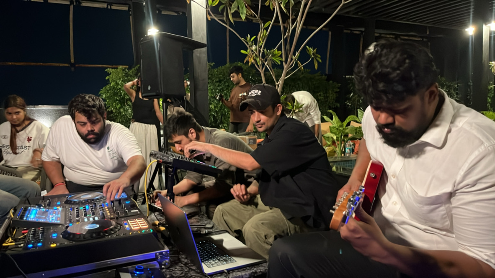

Music for
the in-between.
Warm textures. Intricate drums.
Rhythm built for the room.

Atmosphere for the mind. Rhythm for the room.
EXPLORE MUSIC ↗






01 / SELECTED MOMENTSOut there.
Out there.
In here.


02 / MOVING PICTURESSome things
Some things
need motion.
03 / LISTENFind your
Find your
frequency.
Music by SYNTHATTIC, wherever you listen.
04 / THE ARTISTNO FIXED GENRE. NO SHORTCUTS.
Atmosphere for the mind.
Rhythm for the room.
SYNTHATTIC is the musical alter ego of Ashutosh Purohit — an independent producer and DJ drawn to the space between emotional detail and physical energy.
His sound moves between warm textures, intricate drums, Afro-inspired club rhythms and introspective, dub-leaning moods — music for both inward feeling and movement.
STEP INTO THE MUSIC ↗05 / SELECTED CREDITSShared rooms.
Shared rooms.
Shared energy.
Selected artists and collaborators from the supplied press materials.
John 00 FlemingPavel PetrovJoris VroonAFFKTRafael CeratoEnamourMassaneFrankey & SandrinoNikhil ChinappaCitizen KainMetodi HistrovMinitech Project
06 / PRESS & BOOKINGSLet’s make
Let’s make
something move.
For bookings, press, festivals, support slots and collaborations.